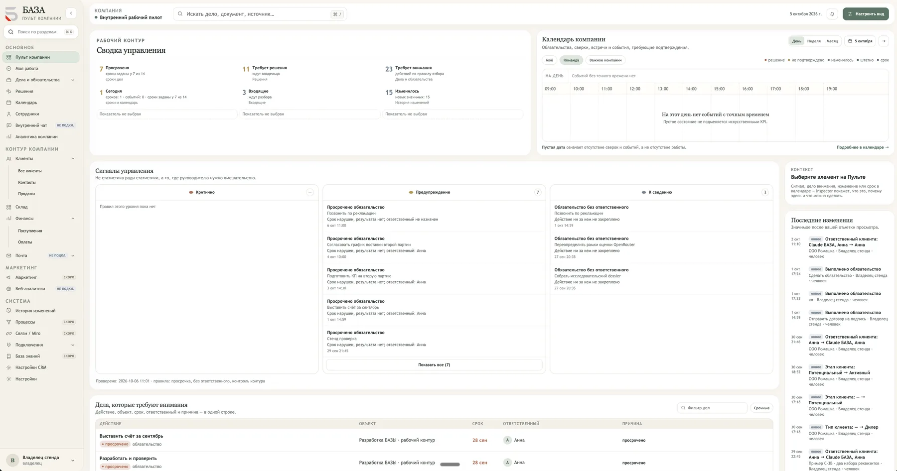
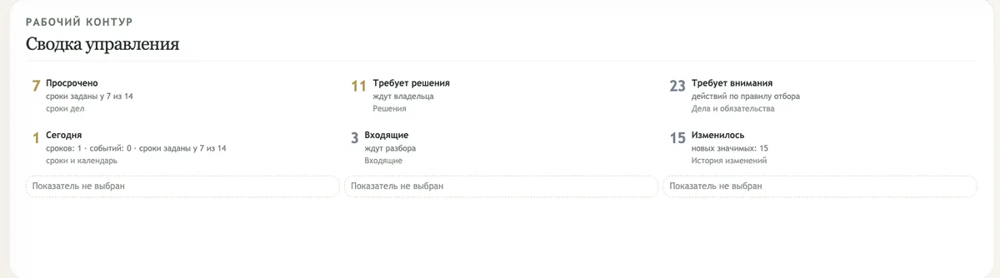
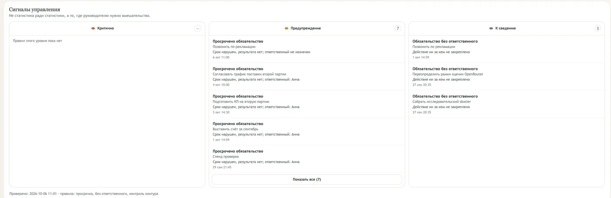
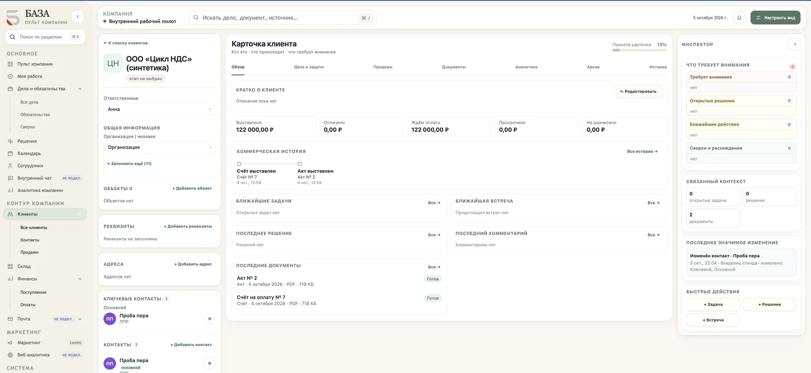
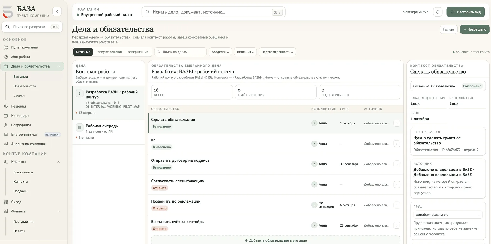

Во время работы над системой для компании «Арсенал» возник вопрос: можно ли видеть компанию целиком из одного пространства? Так появилась БАЗА.
Наша философия →Управленческий пульт компании
Один экран, на котором видно, что происходит в компании, что требует внимания и куда двигаться дальше. Клиенты, деньги, документы, дела и команда — в одной картине.
↻Не нужно выбрасывать то, что уже работает. БАЗА подключается к 1С, МойСкладу, почте и таблицам и собирает их в один управленческий слой.
ВИДЕТЬ · ПОНИМАТЬ · ДЕЙСТВОВАТЬ

Как БАЗА появляется в компании
Начинаем с вашей компании, а не с чистого листа
Разные системы и процессы собираются в единый управленческий слой. То, что работает, остаётся работать — БАЗА связывает это и постепенно забирает внутрь то, что удобнее вести в одном месте.
Источники
Клиенты и продажи
1С · учёт
Склад · МойСклад
Документы
Почта и входящие
Таблицы
→
Как подключаем
ПодключениеВаши системы остаются в работе
Данные приходят через API и вебхуки.
Модули БАЗЫИли всё внутри БАЗЫ
С нуля или с переносом данных.
→
БАЗАуправленческий слой компании
→
Что видит руководитель
Что требует решения решение
Что требует внимания внимание
Что изменилось изменение
Что по срокам срок
Что в контуре контур
Собираем → Связываем → Автоматизируем
Что решает БАЗА
Данные компании становятся инструментом управления
01
Ясная картина компании
В одном месте видно, что просрочено, что ждёт решения, что изменилось и что происходит сегодня.
- Сводка управления на одном экране
- Календарь компании: сроки, встречи, сверки
- Пустое — значит пустое: без искусственных KPI

02
Видно, где нужно вмешаться
Не статистика ради статистики. Сигналы управления показывают, что сломалось, почему и кто отвечает.
- Критично · предупреждение · к сведению
- У каждого сигнала — причина и ответственный
- Из сигнала — сразу к объекту и действию

03
Вся картина по клиенту, деньги и документы связаны
КП, счёт, оплата и акт живут в карточке клиента вместе с контактами, делами и историей. Видно, сколько выставлено, оплачено и чего ждём.
- Клиент → КП → счёт → оплата → акт
- Этапы работы с клиентом и продажи
- Документы формируются и хранятся у клиента

04
Работа команды не теряется
Дела и задачи с исполнителем, сроком и источником. Результат подтверждается, а не просто отмечается галочкой.
- Кто → что → к какому сроку → на каком основании
- Единая очередь задач по всем делам
- Роли и права: каждый видит своё

Платформа
Ядро держит общую картину, модули подключаются по мере необходимости
Компания растёт — система остаётся одной. Начать можно с одного модуля.
Ядро БАЗЫ
Пульт управления
- Знает состояние компании
- Понимает контекст каждого объекта
- Учитывает правила бизнеса
- Учитывает права сотрудников
…и действует только в допустимых рамках.
Клиенты и контактыработает
Продажиработает
КП, счета, оплаты, актыработает
Документыработает
Финансыработает
Календарьработает
Дела и задачиработает
Сотрудники и ролиработает
Складк запуску
Почта и входящиескоро
Подключения к вашим системамработает
+ новые модули по мере ростадальше
Статусы модулей черновые — сверить с фактическим MVP перед публикацией
Сравнение
Не ещё одна CRM и не тяжёлая ERP
Функции могут пересекаться. Различается центр системы.
CRM
Центр системыКлиент и продажа
клиентыпродажикоммуникации
CRM помогает работать с клиентами.
ERP
Центр системыРесурсы и операции
ресурсыучётоперациипланирование
ERP помогает учитывать ресурсы и операции.
БАЗА
Центр системыСостояние компании и управление
сигналыфокус вниманияконтекстдействия
БАЗА собирает управление компанией поверх её данных, процессов и систем.
БАЗА соединяет данные, контекст, правила и действия в одном управленческом слое.
Что получает руководитель
Компания становится управляемой из одного пространства
Видеть
Что происходит в компании — на одном экране, без переключения между системами.
Понимать
Что требует внимания и почему: у каждого сигнала есть причина и источник.
Действовать
Назначить ответственного, перенести срок, принять решение — прямо из сигнала.
Не статистика ради статистики, а то, где руководителю нужно вмешательство.
AI-помощник
Ба́зика — помощник БАЗЫ
Работает в контексте вашей компании. У Ба́зики можно спросить, что происходит, — и получить ответ с опорой на данные.
Читает
Данные, документы и историю изменений компании.
Объясняет
Почему появился сигнал и что изменилось — с источником.
Находит
Клиента, дело, документ или принятое решение.
Подсказывает
Следующий шаг и того, кто за него отвечает.
Общий помощник
Подключается сверху — во всех разделах БАЗЫ.
В допустимых рамках
Видит только разрешённое. Решение принимает человек.
РуководительЧто требует моего решения сегодня?
Ба́зикаДва вопроса: закупка ждёт согласования, а по договору №128 прошёл срок оплаты. Открыть?Источник: договор №128 · история оплат
Пример диалога на демонстрационных данных
Развиваем
Куда растёт БАЗА
Мы честно разделяем, что работает сейчас, а что в разработке. Эти направления делают БАЗУ принципиально больше, чем CRM.
в разработкеГраф обязательств
Кто → что → кому → к какому сроку → на каком основании. Обязательства обеих сторон.
в разработкеПаспорт отношений
Как меняются отношения с клиентом: ритм, обещания, риски, следующий шаг.
в разработкеОбъяснимые сигналы
«Похоже, отношения охлаждаются, потому что…» — с фактами и источниками.
в разработкеПродуктивность работы
Не рейтинги людей, а то, где застревает работа и где нужна помощь.
Следующий шаг
Как начать с БАЗОЙ
Продукт развивается по этапам. Подключиться можно уже сейчас.
01
Посмотреть БАЗУ вживую
Покажем рабочий Пульт и текущие возможности.
02
Обсудить вашу компанию
Разберём процессы, данные и системы, которые стоит собрать в единый контур.
03
Начать внедрение
Определим первый управленческий результат и соберём стартовый контур.
Ранний доступ
Первые компании — пилотное внедрение
- Подключение к вашим системам
- Перенос данных
- Настройка под процессы и роли
- Индивидуальные условия
Тарифы сформируем на реальной экономике первых внедрений.
Стать первым клиентомКто за БАЗОЙ
Продукт, выросший из практики
АннаПродукт · Архитектура · Digital
Проектирует цифровые продукты и пользовательские сценарии, собирает системы от идеи до рабочего решения.
АртемБизнес · Процессы · Внедрение
Разбирает бизнес-процессы и отвечает за то, чтобы продукт работал в реальной компании.
БАЗА выросла из реальной задачи
Вопросы
Придётся ли отказаться от 1С, МойСклада и других систем?
Нет. Работающие системы подключаются к БАЗЕ и остаются источниками данных. Переносим внутрь только то, что удобнее вести в одном месте.
Где хранятся данные?
На серверах в России, в соответствии со 152-ФЗ. Доступ — по ролям и правам.
Сколько занимает внедрение?
Зависит от того, сколько систем и данных нужно собрать. Стартовый контур — первый управленческий результат — собираем в первую очередь.
Сколько стоит?
Сейчас идёт ранний доступ: первые компании подключаем на индивидуальных условиях пилота.
Ба́зика видит все данные компании?
Нет. Ба́зика видит только то, что разрешено правами пользователя, и не принимает решений за человека.
Начнём с вашей компании
Посмотреть БАЗУ вживую
Покажем Пульт на демонстрационных данных и обсудим, каким может быть стартовый контур вашей компании.